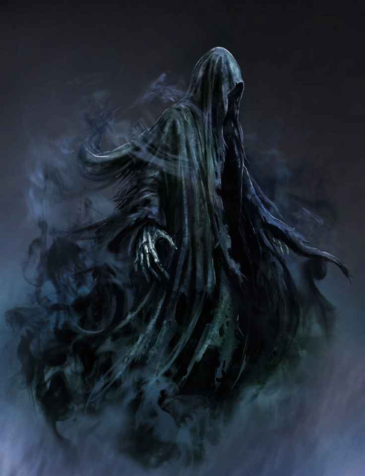

For our player we drew inspiration from Assasins creed,
Elder Scrolls Online, and many other games that had the
medieval times like setting. Our character is a young
man who has been made ill due to a virus that makes him part zombie.
Hence the name "Half-Alive". This character therefore has
a hood and mask in order to not reveal his identity or his
irregular sickness to the world. Only way to cure himself is to
gain the cure from the source of the sickness. The Zombie-King.

For our enemies we grew inspiration from ghost characters similar
to the Dementors in The Harry Potter. Since our main theme is
about the undead we envision half-dead beings as obstacles such as zombies,
ghost, and other other-wordly creatures. Many of these enemy character types will have projectiles
and AI mechanics to follow the main player.
The level design was inspired by traditional platformers such as Celeste and Mario.
Our theme is darkand our setting is in an underground catacomb in which our main
character must make his way down to find the zombie king and obtain the cure from him.
Much of the enemies will be placed in spots where it requires the player to think outside of
the box in order to progress other than just continous "hack and slashing". The design will require
player to rely on his self awareness and the use of nearby tools to continue the progression of the game.